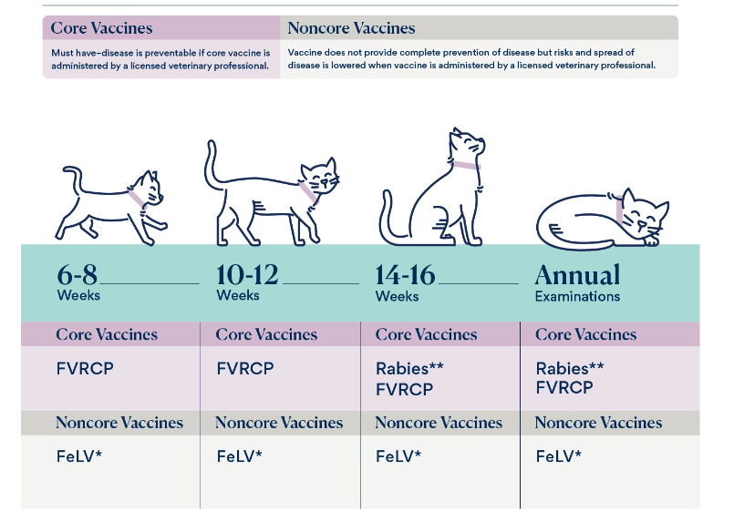

Cat & Kitten Health
Cat Vaccinations
When it comes to medicine, there is no “one-size-fits-all” approach. And preventive care recommendations for our cats are no exception.
Cat vaccination recommendations are among the most contentious debates in veterinary medicine. It’s easy to be overwhelmed when you hear conflicting information about whether your cat needs them and the adverse effects they may have.
Even though it’s a confusing topic, making sure your cat has the shots they need and keeping up with booster shots is very important.
What Vaccines Should My Cat Get?
Most vets will highly recommend the FVRCP and rabies vaccines. These diseases are highly infectious and seen worldwide. They are very dangerous to young cats, and the vaccines are considered to provide a good deal of protection with minimal risk.
Cat & Kitten Health
Cat Vaccinations
When it comes to medicine, there is no “one-size-fits-all” approach. And preventive care recommendations for our cats are no exception.
Cat vaccination recommendations are among the most contentious debates in veterinary medicine. It’s easy to be overwhelmed when you hear conflicting information about whether your cat needs them and the adverse effects they may have.
Even though it’s a confusing topic, making sure your cat has the shots they need and keeping up with booster shots is very important.
What Vaccines Should My Cat Get?
Most vets will highly recommend the FVRCP and rabies vaccines. These diseases are highly infectious and seen worldwide. They are very dangerous to young cats, and the vaccines are considered to provide a good deal of protection with minimal risk.
Cat Vaccination Schedule
Many factors affect the likelihood of a cat developing an infectious disease. The factors that your veterinarian will consider to determine your cat’s vaccination schedule include:
- Age
- Medical history
- Vaccination history
- How likely they are to be exposed to a pathogen
- Severity of disease caused by a pathogen
Kittens (up to 1 year of age)
| Age | Vaccines | Type |
|---|---|---|
| 6-8 weeks | FVRCP FeLV |
Core Core |
| 10-12 weeks | FVRCP (first or second shot) FeLV (first or second shot) |
Core Core |
| 14-16 weeks | FVRCP (only if first shot given at 10-12 weeks) Rabies FeLV (only if first shot given at 10-12 weeks) |
Core Core Core |
| 1 year after initial series | FVRCP booster Rabies booster |
Core Booster Core Booster |
Adult and Senior Cats (Over 1 year old)
| Frequency | Vaccines | Details |
|---|---|---|
| Every year | FeLV | Optional non-core vaccine |
| Every 1-3 years | FVRCP Rabies |
Every 3 years for indoor cats, and every year for indoor/outdoor, outdoor-only, very young, or senior
cats 1-year or 3-year vaccine depending on state laws |
Rabies Vaccine (Core)
Rabies vaccination is given every year or every three years, depending on state laws and the brand of vaccine used.
Rabies is significant not only for its effect on the cat but because it is a disease that is transmissible to humans and can be fatal.
While cats are not natural carriers for the disease, they can be infected by a bite from any infected mammal and then pass it on to others. After an incubation stage, clinical signs of aggression, disorientation, and death rapidly progress.
FVRCP Vaccine (Core)
The other three core vaccines are combined into a single three-in-one vaccine called the FVRCP vaccine. This allows veterinarians to efficiently administer the vaccines all at once, instead of having to inject a cat three separate times in one visit:
- Feline rhinotracheitis virus/herpesvirus 1 (FVR/FHV-1)
- Feline Calicivirus (FCV)
- Feline Panleukopenia (FPV)
FeLV Vaccine (Core for Kittens)
The FeLV vaccine works to protect your cat against feline leukemia virus.
FeLV is found worldwide. Transmitted through body fluids including saliva, urine, and feces, FeLV is spread when an infected cat comes into close contact with another cat that they groom or share bowls with.
Infection with FeLV is not an automatic death sentence. Many cats are fortunate to go into a regressive state and appear perfectly healthy throughout their lives, but some do not fare as well.
Neutering a Cat: Everything You Need to Know
What is neutering a cat?
Neutering (also referred to as feline castration, or getting your cat “fixed”) is a surgical procedure performed by a veterinarian to remove your cat’s testicles.
Reasons for neutering female cats
- Population control. It is important to neuter a female cat before she can have kittens herself. This happens very quickly depending on breed, time of year born and individual development. The first season usually occurs around six months but can be earlier. Queens can have up to three litters in a year.
- Control of nuisance. Female cats will ‘call’ (come into season and be receptive to the male cat) regularly, about every three weeks during sexually active times of the year if they do not get pregnant. Having entire female cats in an area will attract entire males with the attendant problems of spraying, fighting and caterwauling.
- Welfare issues. Unwanted kittens may not be cared for and are likely to suffer from various infectious diseases such as cat ‘flu or worse. There are unlikely to be enough new homes available for them.
- Health issues. Female cats which are not neutered are more likely to suffer from pyometra (infection of the womb) later in life and with mammary tumours. Queens with infectious diseases may pass these on to their kittens. Pregnancy and birth are also not without risk.
Reasons for neutering male cats
- Control of nuisance. Unneutered male cats are likely to stray over a large area, will mark their territory with a very pungent spray and are much more likely to fight – with attendant noise nuisance.
- Health issues. Fighting males are much more likely to spread diseases such as FIV and FeLV to other cats. They are also likely to suffer from fight injuries such as abscesses. Because they wander over a large area they are also at greater risk of suffering road traffic accidents.
- Pet issues. Unneutered male cats will wander from home and may not return. They may also spray inside the home and may be aggressive to their owners. Therefore it is desirable to neuter kittens early enough to ensure that the above problems are prevented. Most people do not want to live with an unneutered male cat.
Postoperative care
Cats usually recover from the neutering operation remarkably quickly. They may be a little drowsy for a few hours, but by the next day, they are usually very lively again. It is sensible to try to keep your kitten fairly quiet for a day or two to allow the internal wounds some time to heal. However, if your kitten seems unusually quiet or dull you should contact your vet. Also, if your kitten starts to lick or scratch excessively at the skin sutures, contact your vet to get a dressing or special collar to prevent any damage being done to the wound.
It is important to remember that once a cat has been neutered, there is a stronger tendency for it to become overweight. You may, therefore, need to adjust the amount of food you provide should your cat start to put on too much weight.
Age for neutering
Traditionally male and female cats have often been neutered at six months of age, but this is after many cats reach sexual maturity and not based on any scientific rationale. For social, health and population control reasons, it is now recommended neutering should routinely take place at around 4 months of age.
The timing of neutering is discussed in more detail in the Cat Group Policy statement

Purina Pet food finder
This handy tool finds the best food for your pet from Purina.

Royal Canin food finder
Find the perfect diet for your pet in just a few clicks
Animals Available for Adoption >
300+ pets available on Pawppies
MEET THEM
{{ animal.name }}
{{ animal.age }}, {{ animal.breedDetails.name }}